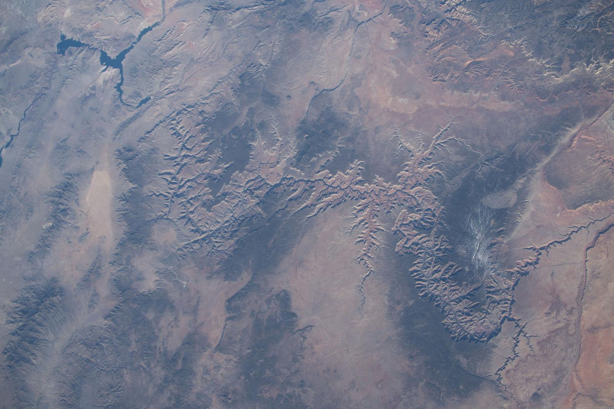

Part 3: The Changing Surface · Chapter 10 of 15
Strata
Layered rocks are pages of Earth history, stacked in order.

Sedimentary rocks form at the Earth's surface from sediment: sand, mud, the shells and skeletons of living things, or minerals that crystallize out of water. As it is carried by rivers, wind or currents, sediment is sorted by size and weight, so that beaches collect sand, quiet lagoons collect mud, and evaporating seas leave salt. Buried and compressed, these deposits harden into sandstone, mudstone, limestone and rock salt.
Each layer is a stratum, and together they are strata. The type of rock, its grain size, and features such as ripple marks or mud cracks tell geologists what the environment was like when it was laid down.
Putting events in order
The simplest rule in geology is superposition: in a sequence of layers that has not been overturned, each layer is younger than the one beneath it. Combined with the fossils in each layer, this allowed nineteenth-century geologists to put rocks around the world in order and build the first geological timescale, long before anyone could put numbers on it. This gives the relative age of rocks.
Putting numbers on time
Since the early twentieth century, radiometric dating has given absolute ages. Some elements, such as uranium, decay into others at a known, steady rate. By measuring how much of the original element remains in a mineral and how much has turned into its product, scientists can calculate how long ago the mineral formed. The oldest known pieces of the Earth, tiny zircon crystals from Western Australia, are about 4.4 billion years old.
Key terms
- stratum
- A single layer of sedimentary rock. The plural is strata.
- sedimentary rock
- Rock formed from layers of sediment that were laid down and hardened.
- limestone
- A sedimentary rock made mostly of calcite, often from shells and skeletons of sea life.
- ammonite
- An extinct sea animal with a coiled shell, often found as a fossil in limestone.
- superposition
- The rule that in undisturbed strata, the oldest layer is at the bottom and the youngest is at the top.
- relative age
- Whether a rock is older or younger than another, without a date in years.
- radioactive dating
- Working out the actual age of a rock, in millions of years, by measuring its radioactivity.
- chalk
- A soft white sedimentary rock formed from the skeletons of tiny sea plants.
Check your understanding
Think of your answer, then open each question to compare.
What does the rule of superposition say?
In undisturbed layers, the oldest is at the bottom and the youngest at the top.
How does radiometric dating work?
Radioactive elements decay at a known rate, so the ratio of original element to its decay product shows how long ago a mineral formed.
What can a sedimentary layer tell us?
What the environment was like when it formed, from its rock type, grain size, structures and fossils.